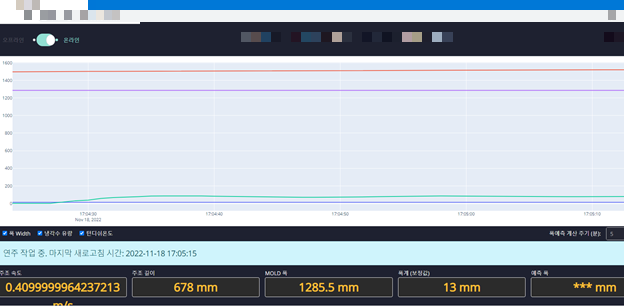
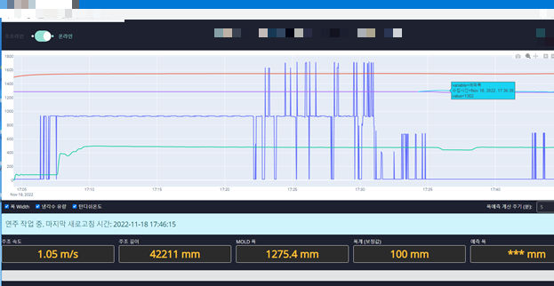

해결 과제
연주(連鑄) 공정에서 슬래브에 분사되는 냉각수량은 표면 온도와 응고 거동에 영향을 주고, 그 결과 약 1주일 뒤 슬래브가 완전히 식었을 때의 최종 폭(width)이 달라집니다. 현장의 레이저 폭 측정 장비는 수증기·스케일·진동 등으로 인해 결측·이상치가 빈번해, 모델이 학습할 수 있는 깨끗한 폭 데이터를 확보하는 것 자체가 핵심 과제였습니다.
데이터 파이프라인
결측이 잦은 폭 신호는 슬라이딩 윈도우로 평활·보간하고, 결측 비율이 임계치를 넘는 구간은 학습 셋에서 제외했습니다. 이 전처리가 모델 정확도에 가장 큰 영향을 준 단계였습니다.
# 데이터 흐름 현장 PLC / Historian └► 원시 시계열 (냉각수량, 표면온도, 주속, 폭, …) └► sliding_window() 결측 보간 + 평활 └► drop_if_missing > θ 결측 과다 구간 제외 └► MLP (TensorFlow / Keras) └► 최종 폭 예측 └► Plotly 실시간 측정 vs 예측
모델 선정
사양서에 명시된 후보 모델들을 모두 학습·비교했고, 최종적으로 MLP가 가장 안정적이고 좋은 성능을 보여 채택했습니다.
선정: MLP
정형 공정 변수에 대해 가장 안정적인 일반화 성능. 추론 비용도 가장 낮아 실시간 운영에 유리.
함께 평가
사양서에 포함된 다양한 회귀·시계열 모델을 동일 데이터셋으로 비교 — MLP 대비 유의한 이득 없음.
검증 기준
예측 폭 오차와 실측 폭의 분포 비교, 강종·두께별 일관성, 결측 보정 후 잔차 분석.
난점
레이저 측정 결측·이상치, 강종/규격별 분포 불균형, 냉각 → 최종폭 사이의 긴 시간 지연.
실시간 예측 대시보드
현장 데이터를 실시간으로 받아 동일한 전처리 → 모델 추론을 거쳐, 측정값과 예측값을 Plotly로 함께 시각화했습니다. 아래는 운전 중 캡처한 화면입니다.


핵심 인사이트
"모델보다 데이터가 80%"
레이저 결측 보정과 결측 과다 구간 제외 — 이 단순한 두 단계가 모델 교체보다 큰 정확도 개선을 가져왔습니다.
가장 단순한 모델이 이긴다
사양서의 모든 후보를 공정하게 비교한 결과, 운영·유지보수까지 고려하면 MLP가 최적이었습니다.
결과
고객사 검수에서 성공으로 인정받았습니다. 실시간 예측 대시보드는 현장 운전자가 냉각 조건을 가이던스로 활용할 수 있는 형태로 운영됐습니다.
※ 고객사 보안 정책상 소스 코드와 학습 데이터는 반출이 불가합니다. 본 페이지는 사양서·납품 산출물·운영 화면 캡처를 기반으로 한 요약입니다.
기술 스택
| 계층 | 기술 |
|---|---|
| 언어 | Python 3 |
| ML 프레임워크 | TensorFlow / Keras (MLP) |
| 데이터 처리 | NumPy · pandas · 슬라이딩 윈도우 보간 |
| 시각화 | Plotly (실시간 측정 vs 예측) |
| 도메인 | 제강 / 연주공정 / 슬래브 폭 예측 |
| 진행 연도 | 2022 |